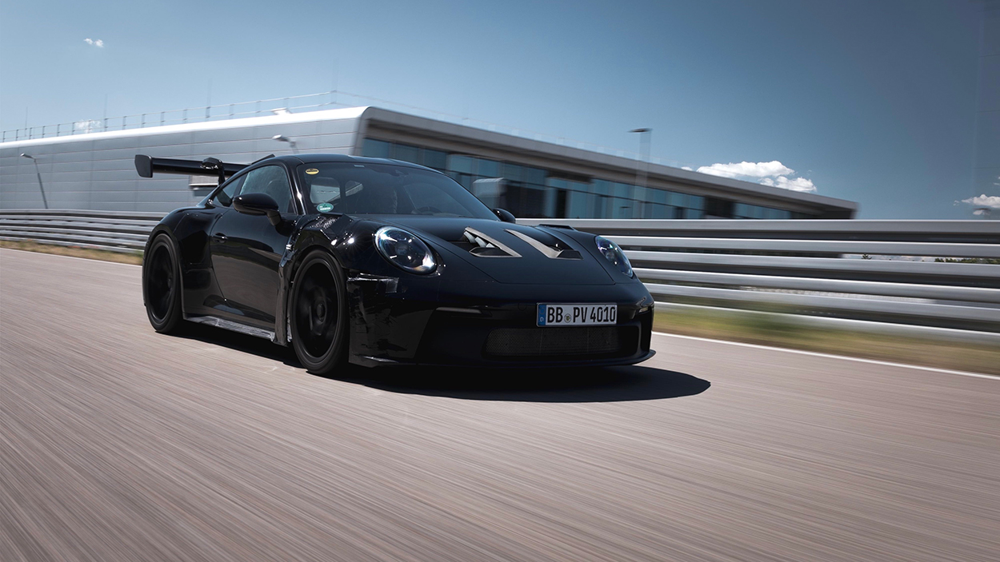

The Porsche 911 GT3 RS possesses a naturally aspirated 4.0 liter-flat-six engine which produces 518 horsepower and 342 pound-feet torque, and can reach 0-60 mph in 3.0 seconds.

Some of my favorite features about the 911 GT3 RS are the sound of the naturally aspirated flat-six engine, the huge rear wing, the rear LED light bar, and the Porsche Active Aerodynamics elements.